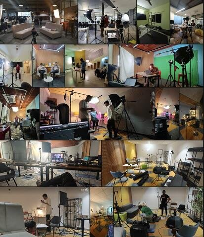

I'm a Creative Director with 8 years building content, video, and brand systems at high-growth B2B SaaS companies. As a founding member of Keka's marketing team, I grew from the company's first social hire into an Associate Creative Director leading teams of 20+.
Eight years at one company isn't a limitation — it's a choice. I joined when Keka had 500 LinkedIn followers and no creative function. I stayed because there was always more to build: the team, the studios, the brand, the AI stack. I left when the function was scaled. That's the reason, not the ceiling.
I'm equal parts creative director, brand builder, and operator. I don't just make things look good — I build the systems, teams, and infrastructure that make creative output scale.
Today I sit at the intersection of brand storytelling and generative AI — using tools like Veo 3, HeyGen, Runway, and ElevenLabs to produce at quality and pace that wasn't possible before.
Click any card to play inline. 8 pieces across 8 capabilities.
Campaigns, platforms, and intellectual property built alongside the video work.
The brief wasn't complicated: announce India's largest B2B SaaS Series A and make it feel earned, not corporate. I led the end-to-end creative strategy — coordinating directly with Keka's founders, department heads, CS Director, Sales President, and Product Head. Organised professional headshots for leadership, scripted and filmed video content, briefed designers on campaign visuals, and orchestrated the simultaneous social rollout across every stakeholder's personal and company channels.
The goal was to make this feel like a human story — a bootstrapped company that built something real, finally getting its moment. Not a press release. Combined with leadership posting, PR coverage, and cross-channel amplification, estimated organic reach crossed 1M+.
Conceived and launched a satirical comic series on the everyday absurdities of HR and workplace culture — entirely from zero. Built the format, the characters, the publishing system, and a community submission portal. 50+ comics produced, still live on Keka's website. The only original IP a B2B HR brand was running in India at the time.
Built Keka's thought leadership programme from scratch during COVID-19 — when most brands went quiet. Evaluated tools, coordinated C-suite speakers including Wayne Brockbank (RBL Group), built the landing page, produced live sessions, and wrote long-form summary articles. 15+ sessions, 20K+ viewers. Still live on Keka's website.
Built Keka Academy from the ground up — a free HR certification platform for practitioners and aspirants. Conceived the content architecture, directed curriculum development, produced the video courses, and built distribution across Keka's own platform and Udemy. Courses cover core HR functions: payroll, core HR, ATS, compensation, and more. The platform established Keka as a credible educational voice in the HR space — not just a software vendor. Courses have averaged a 4-star rating from students and working HR professionals. Enrolment numbers confirm it became one of the most-used free HR learning resources in India.
Created Keka's first design system in 2021 — built off the website as a foundation: colour, typography, spacing, and component systems, then templatised in Canva for org-wide adoption. When Keka expanded post-funding, a new designer evolved the DS further for the wider org. The social and video system I created continued to run as the production foundation for those teams — the original framework that held consistency across Keka's content output during its highest-growth years.
HR Katalyst is Keka's flagship event series — a collaboration across multiple teams. My role across all five editions was creative coverage, social strategy, and live production. For the 500+ physical events across India, the Middle East, and the US, my team owned on-ground shoots: briefing, scripting, location setup, shoot direction, editing, and distribution. For the flagship virtual events (HR Katalyst 1.0–5.0), we handled live streaming operations, agency partnership, set creation within the office, live ops supervision, and real-time social execution. I built and executed the social strategy that ensured every edition reached its maximum audience — crafting content before, during, and after each event to extend reach well beyond the live window.
The virtual flagship events have grown to become the largest of their kind in the HR segment in India. Cumulative live viewership across all virtual editions has crossed 1L+. The 2025 edition alone hit 27K+ global live viewers.
While most teams were still debating AI, I was integrating it into daily production. Researched, tested, and deployed a generative stack that compressed production steps that used to take days into hours — and eliminated entire categories of cost. Prompt engineering, model selection, workflow design, team training. End to end.
Every week I'm reviewing creative — videos, designs, scripts, copy. And every week the feedback loop is the same: subjective opinions, gut calls, "I think this works." I wanted something more rigorous. When Meta released the Tribe v2 model, I saw an opening. What started as a thought experiment — can I build something that reads brain response to creative content in real time? — became a working proof of concept in a few weeks. Built with Claude and Hugging Face, Neural Lens takes video, audio, image, or text input and maps network activation over time. Not a finished product. What happens when curiosity meets a real problem and a new model drops at the right moment. Got validated — people who saw it immediately understood the use case.
View on Hugging Face ↗When I joined Keka, there was no studio, no team, no process. I built the entire creative infrastructure from scratch — equipment, people, workflows, and quality systems.
Today it's a fully operational in-house unit delivering broadcast-quality content at the pace of a social-first brand.

Most creative blockers aren't skill problems — they're clarity problems. When someone understands the real stakes of their work, what it means for the business and the person receiving it, ownership follows naturally. You don't have to chase it.
My job as a manager is to make that context visible and then get out of the way. Set the standard clearly, explain the why behind it, and remove every obstacle between the person and doing their best work. A blocked creative isn't a slow creative — they're a frustrated one. Unblocking them consistently is the loudest signal a manager can send about how seriously they take the team.
I've hired designers, editors, motion artists, and social managers and led them through zero-to-one builds. What I've learned: people rise to the level of trust you extend to them.
From founding marketer to creative leadership.